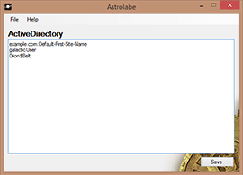

Astrolabe
Astrolabe is a graphical configuration item editor for use with the Galactic API.
Configuration Item Formats:
Configuration items store data that certain classes in the Galactic API use to initialize their state or create connections to needed resources.
Astrolabe is the program used to create configuration items. The following list is a handy reference of all the configuration item formats required
by various classes within the Galactic API.
Galactic.ActiveDirectory
Syntax:
Syntax Note:
The site_name field below is optional. It will default to Default-First-Site-Name if not supplied.
ad_domain_name[:site_name]
username
password
Example:
galacticapi.com:Default-First-Site-Name
galacticUser
0rion$Belt
Galactic.Calendar.iCalendar
Syntax:
Syntax Note:
The username and password fields below are optional. Leave them empty if not required.
List one line per calendar in the configuration file.
Name|URI|[username]|[password]
Example:
US Holiday Calendar|webcal://files.apple.com/calendars/US32Holidays.ics||
NASA Launch Calendar|webcal://www.nasa.gov/templateimages/redesign/calendar/iCal/nasa_calendar.ics|Buzz|Ap0L1o
Galactic.NoSql.Couchbase.CouchbaseUtility
Syntax:
Syntax Note:
The server URLs line must contain one or more URLs.
server_url[,server_url]
bucket_name
bucket_password
Example:
http://192.168.1.1:8091/pools,http://192.168.1.2:8091/pools
galactic
ItsFu11OfSt@rs!
Galactic.SharePoint.SharePointClient
Syntax:
username
password
ad_domain_name
context_url
Example:
galacticUser
0rion$Belt
galacticapi.com
https://sharepoint.galacticapi.com/spaceships/
Galactic.Web.Security.ActiveDirectoryRoleProvider
Additional Configuration required:
Within the web.config the following entries must be setup for the application to utilize the role provider:
The applicationConfigurationItemDirectory attribute should point to the folder containing the configuration items
used by the application.
<system.web>
<roleManager defaultProvider="ActiveDirectoryRoleProvider" enabled="true" cookieRequireSSL="true">
<providers>
<clear />
<add name="ActiveDirectoryRoleProvider" type="Galactic.Web.Security.ActiveDirectoryRoleProvider" applicationConfigurationItemDirectory="~/ConfigurationItems/" description="Galactic Active Directory Role Provider" />
</providers>
</roleManager>
</system.web>
Syntax:
Syntax Note:
The provider_OU_distinguished_name is the OU that is set aside for the role provider to store and manage groups within.
The lines containing group_prefix and group_suffix can be left blank if a prefix or suffix is not desired when naming
the AD groups. The active_directory_configuration_item_name is the file name of the configuration item that contains
information about how the application should connect to AD, see Galactic.ActiveDirectory above for details.
application_name
provider_OU_distinguished_name
[group_prefix]
[group_suffix]
active_directory_configuration_item_name
Example:
Supernova
OU=groups,OU=supernova,DC=galactic,DC=com
sn
role
ActiveDirectory